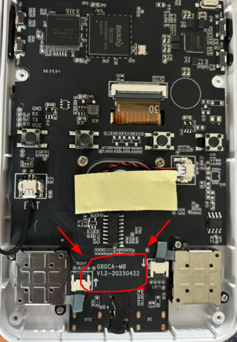
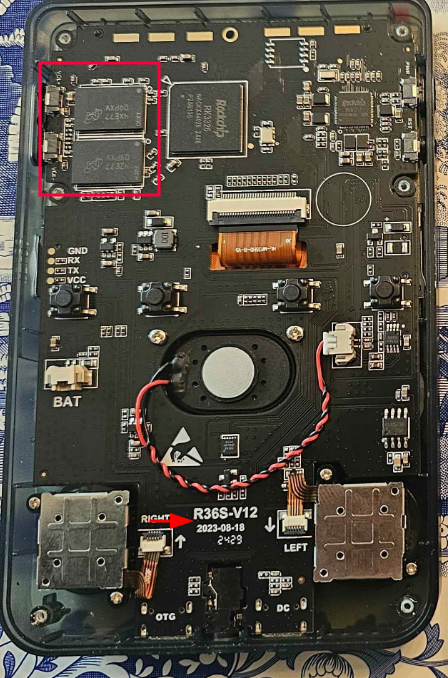
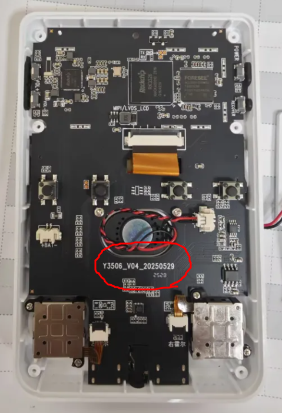
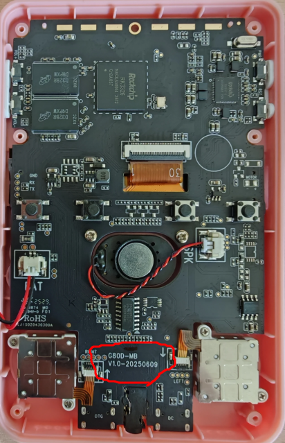

🕵️ Como Identificar seu Console Clone
Passo a Passo:
Muitos consoles portáteis "clone" são visualmente idênticos, mas usam placas-mãe (motherboards) diferentes. Identificar a placa correta é crucial para instalar o sistema (firmware) certo e evitar problemas.
Abaixo listamos os modelos mais comuns e fáceis de reconhecer. Compare seu console com as imagens e descrições.
Se não encontrou algo parecido com sua placa, entre no discord para ajuda.
Ter um clone não é problema, apenas terá que adotar maneias específicas de configuração.

🎮 Placas Mais Comuns
| Imagem | Modelo | Descrição e Diferenças | Compatibilidade com ArkOS |
|---|---|---|---|
|  | R36S Padrão Original | O original versão mais novas tem escrito 'WIFI' na placa para soldagem de modulo wifi. | Melhor e mais fácil. Usa o DTB padrão (ex: rk3326-r35s-linux.dtb). |
|  | "Molho de Soja" (Soy Sauce) | Clone popular que frequentemente usa apenas um chip de RAM. A principal diferença é a tela, que requer um DTB específico para funcionar, caso contrário, resulta na famosa "tela preta". | Requer uma versão especial do ArkOS (como o ArkOS para Clones ou ArkOS4Clone) que inclui o DTB da sua tela para evitar a famosa tela preta. |
 |
Kinhank K36 | Possui design externo mais quadrado e ergonômico. Embora o hardware base (RK3326, 1GB RAM) seja similar, a tela e outros componentes são diferentes, exigindo um firmware próprio. | Requer firmware específico (historicamente existiu um ArkOS para K36). O sistema operacional padrão costuma ser um EmuELEC mal otimizado. |
|  | Clones GB. | Começam com essa inscrição, precisam de um arquivo diferenciado dos demais | Varia, mas consoles horizontais (como o R36H) podem ter pequenas diferenças de botões (como a falta do botão FN) que afetam o mapeamento no software. |
 |
Clones de 512 MB de RAM | Versões mais antigas ou de baixo custo com metade da memória RAM. Isso torna a emulação de sistemas mais exigentes (como N64 e PSP) praticamente inviável. | Funcionam com o SO customizado, mas o desempenho é limitado devido à falta de RAM. |